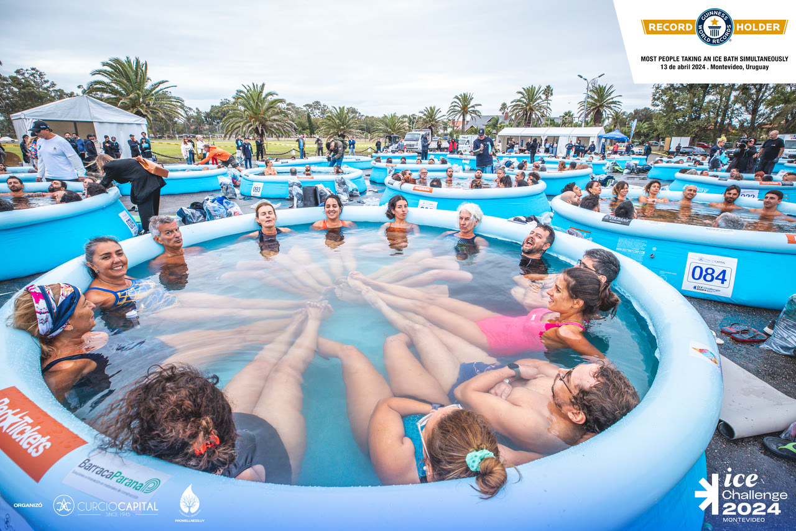

[ 01 ]Solidario
La disciplina también
se entrena en frío.
Ice Challenge 2024 Récord Guinness Centro Horizonte
[ 02 ]Récord Guinness · 13 abril 2024
Meterse al hielo con los demás.
El 13 de abril de 2024, Montevideo fue sede del Ice Challenge 2024: el récord Guinness al mayor número de personas tomando un baño de hielo de forma simultánea. Lo organizó Curcio Capital como empresa — y Alejandro no lo miró desde afuera.


Se metió al barril de hielo junto a todos los demás. Hay evidencia fotográfica oficial con sello Guinness. Esa es la diferencia entre auspiciar y participar: entre mirar desde el palco y estar adentro del agua helada, sintiendo lo mismo que sienten los demás.
Guinness World Records™ Récord homologado
personas con el cuerpo sumergido
en agua helada al mismo tiempo
- Minutos sumergido
- 3
- Temperatura
- 13°
- Piscinas con hielo
- 90
- Récord anterior
- 509
el mínimo para entrar en el conteo
máximo admitido en el agua
montadas en el predio
Perth, Australia — enero 2024
A beneficio de Centro Horizonte Educación de niños con parálisis cerebral. El evento recaudó unos $975.000.
[ 03 ]Drift Arena Solidario · noviembre 2024
Drift Arena Solidario.
Teletón.
El 9 de noviembre de 2024, el Antel Arena se convirtió en pista: los autos de Toyota Gazoo Racing derrapando frente a las tribunas llenas, con entrada libre, para contribuir a la movilidad de los niños de la Fundación Teletón.
- Fecha
- 9 de noviembre de 2024
- Lugar
- Antel Arena, Montevideo
- Entrada
- Libre
- A beneficio de
- Fundación Teletón — movilidad de los niños
[ 04 ]Pelota al Medio · Ministerio del Interior
Pelota al medio.
Apoyo y acompañamiento constante al programa «Pelota al Medio», del Ministerio del Interior: una iniciativa que promueve la inclusión social y la permanencia educativa de jóvenes a través del deporte.
Durante el año se impulsaron distintas acciones junto al programa, incluyendo la organización de actividades y torneos —como la Copa Toyota—, fortaleciendo el vínculo con la comunidad.
- Programa
- Pelota al Medio
- Impulsa
- Ministerio del Interior
- Objetivo
- Inclusión social y permanencia educativa a través del deporte
- Acciones
- Actividades y torneos durante todo el año


El éxito corporativo está vacío si no logramos democratizar las oportunidades y mejorar el ecosistema a nuestro alrededor.Alejandro Curcio — Pilar «La Figura»